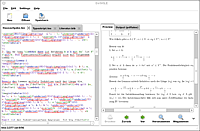

Desigle
Archivierte Anleitung
Dieser Artikel wurde archiviert, da er - oder Teile daraus - nur noch unter einer älteren Ubuntu-Version nutzbar ist. Diese Anleitung wird vom Wiki-Team weder auf Richtigkeit überprüft noch anderweitig gepflegt. Zusätzlich wurde der Artikel für weitere Änderungen gesperrt.
Anmerkung: Das abhängige Paket python-gnome2-extras ist nicht mehr verfügbar.
Zum Verständnis dieses Artikels sind folgende Seiten hilfreich:
Desigle  ist ein minimaler LaTeX-Editor, geschrieben in Python, der auf den Bibliotheken GTK und Poppler aufbaut. Desigle beherrscht Syntax-Highlighting, Auto-Vervollständigung und als Besonderheit ein PDF-Vorschaufenster, das die TEX-Datei in Echtzeit generiert.
ist ein minimaler LaTeX-Editor, geschrieben in Python, der auf den Bibliotheken GTK und Poppler aufbaut. Desigle beherrscht Syntax-Highlighting, Auto-Vervollständigung und als Besonderheit ein PDF-Vorschaufenster, das die TEX-Datei in Echtzeit generiert.
Installation¶
Desigle ist nicht in den offiziellen Paketquellen verfügbar, es lässt sich allerdings einfach entweder über ein fertiges Paket oder lokal installieren.
Fremdpaket¶
Das Paket desigle_0.1-1_all.deb  herunterladen und manuell installieren [1].
herunterladen und manuell installieren [1].
Hinweis!
Fremdpakete können das System gefährden.
Damit sich Desigle auch aus der Kommandozeile starten lässt, legt man ein Skript /usr/local/bin/desigle an, etwa mit dem Inhalt:
1 2 | #!/bin/bash
python /usr/share/desigle/desigle.py
|
Dazu benötigt man Root-Rechte [2]. Starten [3] lässt sich Desigle aus der Kommandozeile [4] mit:
desigle
Lokal¶
Da es sich bei Desigle um ein in Python geschriebenes Programm handelt, sind lediglich die einzelnen Programmdateien von der Projektseite herunterzuladen. Am einfachsten gestaltet sich das über SVN:
svn checkout http://desigle.googlecode.com/svn/trunk/ desigle
Zusätzlich müssen die folgenden Pakete installiert werden [1]:
libpoppler4
libpoppler-glib4
python-poppler
 mit apturl
mit apturl
Paketliste zum Kopieren:
sudo apt-get install libpoppler4 libpoppler-glib4 python-poppler
sudo aptitude install libpoppler4 libpoppler-glib4 python-poppler
Starten lässt sich Desigle dann aus dem lokalen Verzeichnis mit:
./desigle.py
Verwendung¶

In der Verwendung unterscheidet sich Desigle nicht von anderen Editoren. Allerdings scheint das Highlighting in einigen Fällen nicht richtig zu funktionieren (siehe Bild). Man deaktiviert es z.B. über das Auskommentieren der entsprechenden Zeilen im Python-Quelltext. Als einzige nennenswerte Einstellung bietet Desigle die Erstellung einer Musterdatei an, die fortan als Grundlage einer neuen Datei dient.
Das PDF-Vorschau-Fenster ist intuitiv zu bedienen. Die pdflatex-Ausgabe ist über einen Reiter oberhalb des Vorschaufensters leicht zu erreichen. Evtl. vorhandene Fehler lassen sich so schnell finden.
Menü¶
| Menüsteuerung | |
| Menü | Funktionen |
| "File" | Laden, speichern, beenden des Programms. |
| "Edit" | Aktionen vor- und rückgängig machen, Suchfunktion |
| "Settings" | Einstellungen ändern |
| "Help" | Information, nach Updates suchen |

 Übersichtsartikel
Übersichtsartikel- Erstellt mit Inyoka
-
 2004 – 2017 ubuntuusers.de • Einige Rechte vorbehalten
2004 – 2017 ubuntuusers.de • Einige Rechte vorbehalten
Lizenz • Kontakt • Datenschutz • Impressum • Serverstatus -
Serverhousing gespendet von